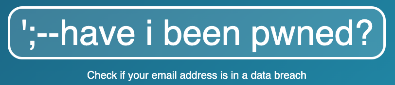
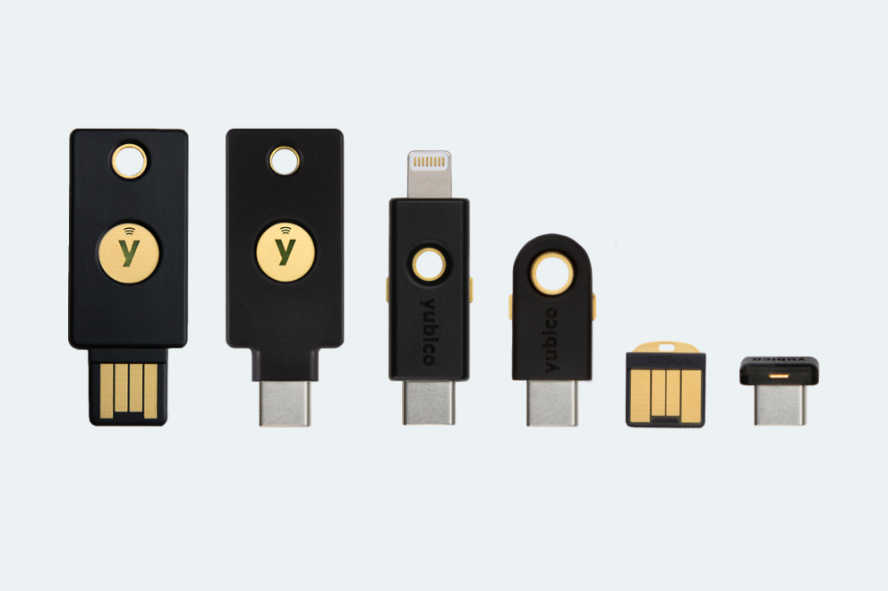
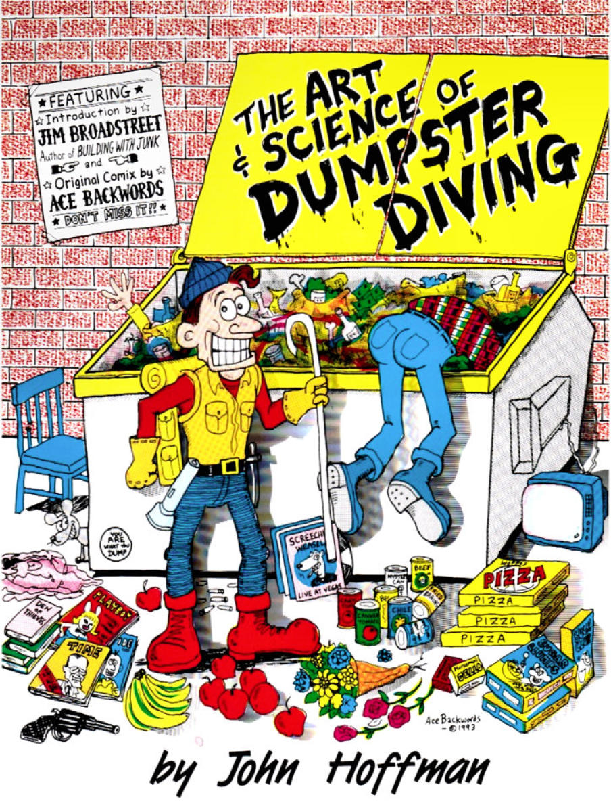

Staying Safe Online
2024-09-24
Introduction
- Researchers are increasingly targeted and harassed online
- Sexual health, vaccines, climate change, gun violence, …
- Hollywood’s depictions of these threats are unrealistic
- A few simple rules will keep you safe(r)
You vs. the data you collect
- This talk is about keeping you safe
- Keeping the data you collect for your research safe is a different
(but related) problem
- Though compromising you is often the fastest way to get at that data
1. We have to look after ourselves
- Companies and universities’ rules protect them, not you
- Much institutional security is performative security
theater
- E.g. forcing regular passwords changes makes people choose passwords they can remember easily (which are insecure)
- We have to put on our own masks
2. The real world matters too
- Most attacks take place offline
- Social engineering is a much bigger threat than digital
hacking
- “Smart spies don’t break in: they get jobs as bartenders.”
- Modern smartphone cameras increase the power of shoulder surfing
- It’s very easy to get a legible picture of a page or screen from a distance
- Rely on situational awareness
- Be more careful when working on controversial things or in public places
- De-escalate at other times to avoid security fatigue
3. Understand your threat models
- You probably aren’t targeted by state-level actors
- If you are, there’s little you can do
- But Apple does have Lockdown Mode
- Effective, practical security comes from simple preventive
routine
- “I’ll brush my teeth when I have cavities” doesn’t work
3.1 Casual threats
- A student in your class hangs out in online echo chambers with other young men complaining about SJW bullshit
- He and his friends decide to target you with anonymous online abuse for the lolz
- Low skill level and unlikely to invest significant effort
- But may be backed up by more knowledgeable (and more committed)
forum members seeking to radicalize him
- Who might also scale up the attack
3.2 Intimate threats
- Abusive/controlling ex-romantic partner
- Everything created for parents to track children has been repurposed
- Lots of online forums with “helpful” advice
- Knows the name of your first pet
- Has/had opportunities to install spyware on your devices
- Apple AirTags are a real-life version of the tracking devices in spy movies and are easy to plant in a coat, purse, or car
- Lone attacker, but very persistent
3.3 Insider threats
<p>
<img src="../../files/talks/safety/grandmother.jpg" alt="grandmother" width="100%"/>
</p><ul>
<li>Somebody always has their hands on the hardware</li>
<li>Whistleblowers use privileged access for good</li>
<li>But access can just as easily be used for profit
<ul>
<li>Or in response to blackmail</li>
<li>Or for a cause they genuinely believe in</li>
</ul>
</li>
<li>One motivation for this talk is to help you safety-check things you are asked/told to do</li>
</ul>3.4 Commercial threats
- Professionals don’t care about you: they’re in it for the money
- Phishing attacks are a game of percentages
- If you send a million emails, someone will click the link
- So will someone if you spoof the WiFi at a coffee shop
- Anti-virus software and similar measures help with this
- A bike lock’s real purpose is to make it easier for a thief to steal someone else’s bike
- You do have an anti-virus installed, right?
Traces
- You have been leaving parts of yourself online for years
- Existing breaches leaked to the dark web let even low-level attackers see billions of leaked records
- Check https://haveibeenpwned.com/ to see which you are included in
- Sign up to find out what services you need to change passwords for
- And set up Google Alerts for your name, email address, etc.

Keep your software up to date
- Yeah, the downloads are annoying…
- …but many (most?) are security fixes
- This is especially critical for your browser
4. Use a password manager
- Weak passwords can be broken by dictionary attacks
- Every clever scheme you come up with has been thought of before
- A password manager generates strong passwords for you
- Your passphrase should be several words long
- And not a sentence
- 1Password is my favorite
- Not LastPass, whose breaches have leaked millions of passwords
- But who will read my email when I’m dead?
Scraps of paper
<img src="../../files/talks/safety/notebook-pen.jpg" alt="Notebook and pen" width="80%"/><ul>
<li>Writing passwords down isn't such a bad idea</li>
<li>You have a lifetime of practice keeping track of papers and notebooks,
and you'll probably notice if they're stolen</li>
<li>Putting a sticky note on your desk, on the other hand…</li>
</ul>5. Use two-factor authentication
- Authentication relies on:
- Something you know (like a password)
- Something you have (like a security key)
- Something you are (e.g., your fingerprints)
- Two-factor authentication (2FA) requires two of these
- Use an app rather than text messages
- Never share an authentication code
VPNs and Tor, oh my
- Incognito browsing doesn’t store history, but doesn’t make you
invisible to your ISP
- Or the coffee shop owner, or…
- SMS messaging (texts) are basically in the clear
- A virtual private network (VPN) connects to a server then has that server connect to other sites on your behalf
- Tor routes messages
randomly through a network of servers
- Protects both terrorists and human rights activists
- Both reduce some risk, but again: what is your threat model?
- Please use Signal or Threema
YubiKeys

- Dedicated password storage with push-button access
6. Check before opening
- Microsoft Office documents are actually programs
- Which run automatically when you open them
- So institutional emails are training us to be hacked
- The text of a link in email or on a web page can say anything
- And domain names like paypa1.com are hard to spot
- If someone from your bank asks you for information to confirm your identity, call them back using the number in the phone book
7. Erase before discarding
- Emptying the trash doesn’t erase files
- Encrypting your hard drive helps is quick and easy
- Use secure deletion tools like BleachBit or FileShredder before discarding any hardware

Online is forever
- Shredding files doesn’t affect sites like Dropbox
- Or things you posted on social media
- But the EU now has a right to be forgotten, which is a big step in the right direction
- And California now requires it to be a single-step process
- See e.g. https://globalprivacycontrol.org/
8. Check accounts periodically
- Building social media around ad revenue was one of my generation’s
biggest mistakes
- Which is saying a lot…
- “If you don’t pay for the service, you’re the product”
- Stop using
TwitterX - Use a tracking blocker like uBlock Origin
- Companies frequently change their terms
- So check your settings at the start of every semester
- Or some other biannual event
Travel
- Some people use separate devices for work and personal life
- That’s increasingly unrealistic
- Others use a burner phone when traveling internationally
- But that can arouse suspicion
And now, AI
- AI is writing malware and ransomware in industrialized quantities
- And language models are really good at predicting human password choices
- Companies are strip-mining user data to train models
- Or to sell to companies that are training models
- Remember, Leland Stanford ran a grocery store…
- You should be able to say “no”
- Or to be paid a negotiable rate for its use
9. Help fight back
- Casual attackers may eventually move on
- But will also often revisit previous victims
- And will usually find new ones
<img src="../../files/talks/safety/silence-is-violence.jpg" alt="Woman holding sign saying 'silence is violence'" width="80%"/><ol>
<li>Do not engage directly</li>
<li>Report the attack</li>
<li>Find support</li>
<li>Use anti-harassment apps like <a href="https://www.blockpartyapp.com">Block Party</a></li>
</ol>10. It’s not just about you
- The only long-term solution to these problems is legislative
- Cars and drugs are safe(r) because of liability legislation
- Which auto and pharma companies still fight against
- Combating hate speech and radicalization is part of the solution
- As is end-to-end encryption
Man I can’t honestly tell if it’s just transference because I don’t know what to do with my anger and pain about it, but it sure does fucking suck that every alt-right influence the Christchurch shooter cites makes money via Shopify.
– Johnathan Nightingale, March 15, 2019
Resources
Thank You

start where you are · use what you have · help who you can